概要
初期設定
アニメーション
口パク
着せ替え基本
着せ替えパーツの領域設定
カテゴリごとの着せ替え設定
着せ替えのアニメーション
サンプルダウンロード
その他解説
目次
概要
このメモは、「シェルの作り方」の知識を前提としています。
その上で、着せ替えやアニメーションの設定をサンプルを交えて簡易的に解説します。
基本的な知識は、ukadocに詳しい説明があります。
SSPの専用記述を用いるため、このメモの記述を使うと、ゴーストがSSPでしか動作しなくなります。
各種ベースウェア（ninix-ayaなど）で起動できなくなるので注意してください。
今回使う画像は以下です。
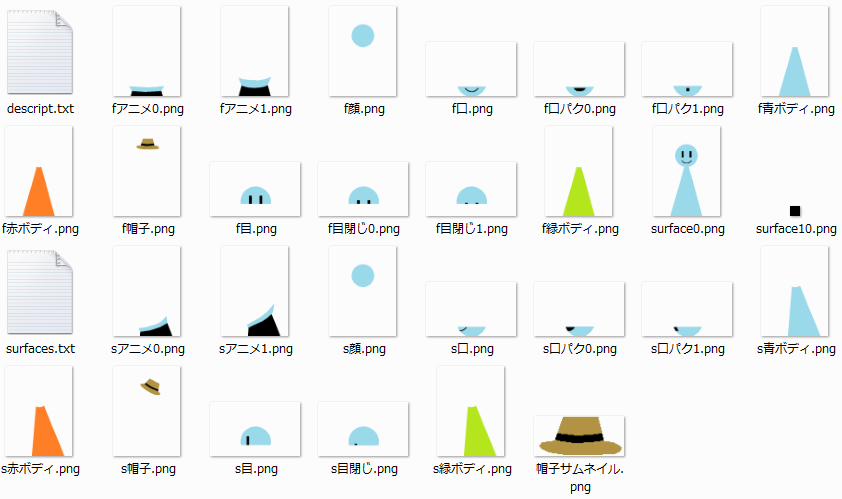
このメモの下部のリンクから、一式ダウンロードすることができます。
初期設定
開発を簡易にするため、SSPの開発者用機能を使用します。
（ゴースト上で右クリック→設定(O)→本体設定...(P)で設定画面表示）
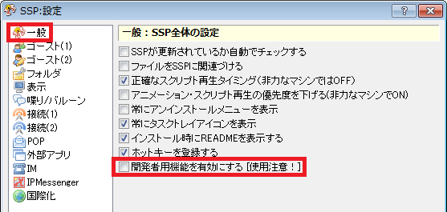
補足
開発者機能は色々便利ですが、自分のゴースト以外で使うと予期しないバグを起こす可能性があることを意識しておいてください。
例：「スクリプトログ」から過去のスクリプトを実行することにより、本来起こりえない処理が行われ、セーブデータが破損する
上記の例では、フラグをセットしたりする処理が実行されることがあり、それによって致命的なエラーを引き起こします。
surfaces.txtには、以下が記述されている状態とします。
//から始まる行は読み込まれません。（実際は少し違いますが、慣例として//を頭に付けます）
メモとして適切に書いておくと、後々修正する時に分かりやすくなります。
----ここから----
charset,Shift_JIS
descript
{
version,1
}
// サーフェスの画像指定
surface0
{
element0,base,f顔.png,0,0
element1,overlay,f口.png,0,0
element2,overlay,f目.png,0,0
element3,overlay,f青ボディ.png,0,0
}
surface1
{
element0,base,f顔.png,0,0
element1,overlay,f口.png,0,0
element2,overlay,f目閉じ1.png,0,0
element3,overlay,f青ボディ.png,0,0
}
// 領域設定
surface.append0-1
{
collision0,96,79,206,123,head
}
// アニメーション用サーフェス
surface1000
{
element0,base,f目閉じ0.png,0,0
}
surface1001
{
element0,base,f目閉じ1.png,0,0
}
// アニメーション設定
surface.append0
{
// アニメーション0番 瞬き
animation0.interval,rarely
animation0.pattern0,overlay,1000,0,0,0
animation0.pattern1,overlay,1001,50,0,0
animation0.pattern2,overlay,1000,50,0,0
animation0.pattern3,overlay,-1,50,0,0
}
----ここまで----
descript.txtには、以下が記述されている状態とします。
shell/master/descript.txtです。（masterは作成中のシェルのフォルダ名に読み替え）
ghost/master/descript.txtではないので注意してください。
----ここから----
charset,Shift_JIS
craftman,sakusha_no_namae
craftmanw,作者のなまえ
craftmanurl,http://www.xxxxxxxxxxxxxxxx.co.jp/
id,tester
name,テスト用
type,shell
seriko.use_self_alpha,1
----ここまで----
アニメーション
「シェルの作り方」ではまばたきをアニメーションで作りましたが、これは発動タイミングが決まっています。
ここでは、好きなタイミングで発動できるアニメーションを記述します。
好きなタイミングで発動したい例としては、スカートめくりがあげられます。
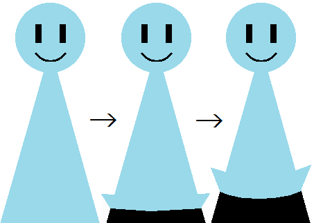
上記のような動きをするアニメーションを作ります。
これは、ユーザーがマウスホイールでアクションを起こした場合のみ発動させたいアニメーションです。
しかし、「マウスホイールを回転させた」といったユーザのアクションへの反応は、ゴースト側の辞書が担う部分です。
そのため、シェル側では能動的に発動しないアニメーションを作り、ゴースト側から再生を行います。
アニメーション再生さくらスクリプトである\i[????]（????は数字）をトークに含めることでアニメーションが再生されます。
以下のサンプルは、段落「基本設定」のsurfaces.txtに追加すると正しく動きます。
----ここから----
surface.append0-1
{
// アニメーション200番 スカートめくり
// ゴーストのトークで\i[200]を記述するとこのアニメーションが再生される
animation200.interval,never
animation200.pattern0,overlay,1020,0,0,0
animation200.pattern1,overlay,1021,150,0,0
animation200.pattern2,overlay,1020,300,0,0
animation200.pattern3,overlay,-1,150,0,0
}
// アニメーション用サーフェス
surface1020
{
element0,base,fアニメ0.png,0,0
}
surface1021
{
element0,base,fアニメ1.png,0,0
}
----ここまで----
上記を記述後、ゴーストを起動し、右クリック→機能(F)→開発用パレット(D)→スクリプト入力、またはCtrl + Sで送信ボックスを開きます。
ここに、文字をいれるとそのままSSP上で再生されます。
上記で作ったアニメーションを確認するため、\i[200]と入力してみてください。体がめくれます。
上記アニメーションの再生時、めくれ上がった時間が少し長いことが確認出来るかと思います。
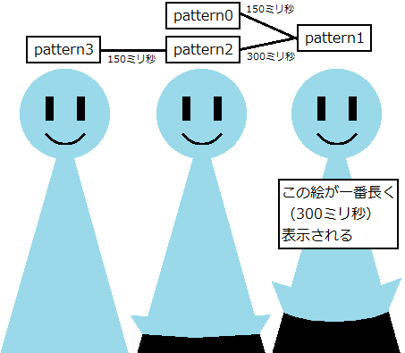
アニメーションパターンの設定では、数字がずらずら並ぶため意味が掴みづらいですが、以下の順に記述します。
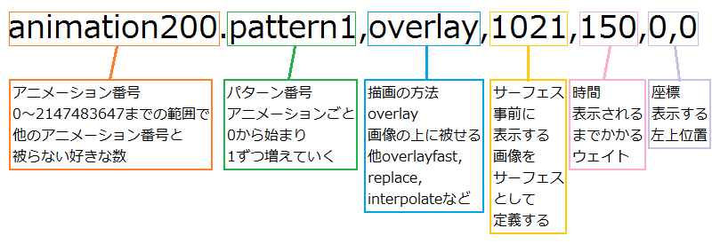
サーフェスに-1を指定すると、今までのアニメーション効果を全て消去することができます。
アニメーションタイミングneverは色々な場面で使えます。
例えば、何か思いついて頭に豆電球が浮かぶ、ため息を吐くなど、漫符（まんぷー配布元、ページ下部）を活用することが考えられます。
アニメーションで動きを出すことが出来ます。
口パク
ここでは、ゴーストがトークすると、それに合わせて口をパクパク動かすアニメーションを作る方法を記述します。
基本的なアニメーションの解説は、段落「アニメーション」を参照してください。
以下のサンプルを段落「基本設定」のsurfaces.txtに追加すると、バルーンに文字が表示される時に再生するアニメーションとなります。
----ここから----
surface.append0-1
{
// アニメーション1番 口パク
animation1.interval,talk,1
animation1.pattern0,overlay,1010,0,0,0
animation1.pattern1,overlay,-1,150,0,0
animation1.pattern2,overlay,1011,150,0,0
animation1.pattern3,overlay,-1,150,0,0
}
// アニメーション用サーフェス
surface1010
{
element0,base,f口パク0.png,0,0
}
surface1011
{
element0,base,f口パク1.png,0,0
}
----ここまで----
talkの後ろの数字（ここでは1）は、「バルーンに何文字表示されるごとにアニメーションを再生するか」です。
トークは、句読点などでウェイトが入ることがあり、また、文字の表示スピードをSSP本体設定でユーザーが変更することが出来ます。
従って、タイミングをこの数字を調整することで制御することは出来ません。
口パクアニメーション再生中であれば、アニメーションが終了するまでは上記設定は無視されます。
そのため、基本的には1固定で問題ありません。
上記のアニメーション動作は以下画像のようになります。
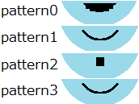
サーフェスに-1を指定すると、今までのアニメーション効果を全て消去することができます。
着せ替え基本
ここでは、右クリックメニューに着せ替えを追加する方法を記述します。
着せ替えはsurfaces.txtだけでなく、descript.txtへの記述も必要となります。
サンプルとして着せ替えで帽子を被るようにしてみます。
実行イメージは以下です。
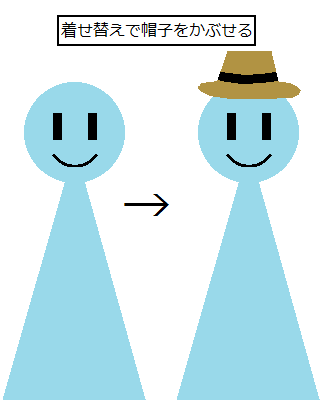
以下のサンプルを段落「基本設定」のsurfaces.txtに追加すると、シェルでの着せ替え設定となります。
----ここから----
surface.append0-1
{
// アニメーション110番 着せ替え帽子
animation110.interval,bind
animation110.pattern0,overlay,1040,0,0,0
}
// アニメーション用サーフェス
surface1040
{
element0,base,f帽子.png,0,0
}
----ここまで----
以下のサンプルを段落「基本設定」のdescript.txtに追加すると、ゴースト側から制御するための着せ替え設定となります。
----ここから----
sakura.bindgroup110.name,帽子,ハット,帽子サムネイル.png
sakura.menu,auto
----ここまで----
上記を設定すると、ゴースト側の着せ替えが使えるようになります。
descript.txtに追加した上の行の記述の意味は以下です。
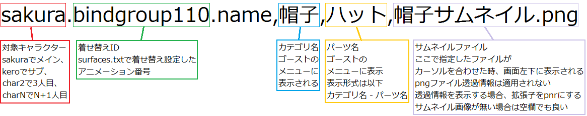
上記の通り、surfaces.txtの設定が前提となります。
補足
2人目のキャラは、sakura.〜を全てkero.〜に、3人目はchar2.〜と記述します。
descript.txtに追加した下の行については、メニューに着せ替えを表示する指示です。
これがないと、メニューの「着せ替え」に何も表示されず、着せ替えが出来ません。
手動で設定する方法については、段落「着せ替えのメニュー表示」で説明します。
着せ替えはやや特殊です。
今回の例であれば、帽子を着せ替えで装着すると、「アニメーション110番を装着している」という情報が保持されます。
その結果、サーフェスを変更しても、アニメーション110番が着せ替え設定であれば、装着状態となります。
サーフェス0番の時、着せ替えを行って帽子を装着した後、サーフェスが1番に変化しても、サーフェス0番と同じく帽子を装着しています。
そのため、「特定のサーフェスだけ対応する着せ替えアニメーションが無い」という状況だと、不自然です。
つまり、全てのサーフェスに着せ替えアニメーションを記述する必要があり、かつそのアニメーション番号を統一する必要があります。
補足
メンテナンスすることを考えて、番号をふる時には事前にマイルールを作っておくと、楽になります。
例：アニメーション100〜199番は着せ替え用にする
着せ替えパーツの領域設定
例えば、獣耳などが着せ替えとしてつく場合が多くあります。
そんなとき、せっかくなので領域を定義して、専用の反応をしたいと思うこともありえると思います。
これを設定する方法を記述します。
上記段落「着せ替え基本」が設定されているとして、帽子に領域を設定してみることにします。
----ここから----
surface.append0-1
{
// アニメーション110番 着せ替え帽子
animation110.interval,bind
animation110.pattern0,overlay,1040,0,0,0
animation110.collision100,105,57,208,100,hat
}
----ここまで----
領域設定は、「シェルの作り方」で触れたのとほぼ同じです。
違いは、先頭にアニメーション番号の指定がつくことです。
このようにすると、アニメーション中のみ有効な触り領域を作成できます。
上記を記述後、ゴーストを起動し、右クリック→機能(F)→開発用パレット(D)→サーフィステスト、またはCtrl + Tでテストボックスを表示すると、hatという領域が追加されていることが確認できます。
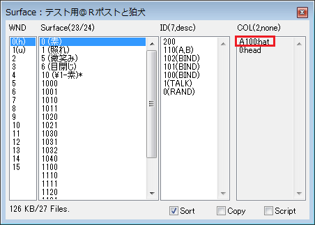
なお、アニメーションで設定した領域は、既存の領域より上にきます。
例えば、今回は最初に設定済みのheadとhatが一部重なっていますが、重なった部分はhatが優先されます。
補足
通常の領域設定では、先（ファイルの中で先頭に近い、ファイル内での行番号が小さい）に書いた方が優先されます。
surfaces.txtに以下を記述することで、優先方法を変更することができます。
----ここから----
descript
{
version,1
// collision???で設定したIDの昇順
collision-sort,ascend
// 上記の降順
//collision-sort,descend
}
----ここまで----
カテゴリごとの着せ替え設定
上記段落「着せ替え基本」を踏まえて、今度は「複数から選択可能、ただし必ず1つ選択しなくてはならない」という着せ替えを作ります。
これは、服の着せ替えなどで必要になることが多いです。
全ての服を外すことが出来てしまうと、表示する画像で問題が出てしまうかもしれません。
以下のサンプルを段落「基本設定」のsurfaces.txtに追加および修正を行うと、体の色を着せ替えで設定できるようになります。
----ここから----
surface0
{
element0,base,f顔.png,0,0
element1,overlay,f口.png,0,0
element2,overlay,f目.png,0,0
element3,overlay,f青ボディ.png,0,0 // この行を削除
}
surface1
{
element0,base,f顔.png,0,0
element1,overlay,f口.png,0,0
element2,overlay,f目閉じ1.png,0,0
element3,overlay,f青ボディ.png,0,0 // この行を削除
}
surface.append0-1
{
// アニメーション100番 着せ替え青ボディ
animation100.interval,bind
animation100.pattern0,overlay,1130,0,0,0
// アニメーション101番 着せ替え赤ボディ
animation101.interval,bind
animation101.pattern0,overlay,1131,0,0,0
// アニメーション102番 着せ替え緑ボディ
animation102.interval,bind
animation102.pattern0,overlay,1132,0,0,0
}
surface1030
{
element0,base,f青ボディ.png,0,0
}
surface1031
{
element0,base,f赤ボディ.png,0,0
}
surface1032
{
element0,base,f緑ボディ.png,0,0
}
----ここまで----
以下のサンプルを段落「基本設定」のdescript.txtに追加すると、ゴーストから制御するための着せ替え設定となります。
----ここから----
sakura.bindoption.group,ボディ,mustselect
sakura.bindgroup100.name,ボディ,青ボディ,
sakura.bindgroup101.name,ボディ,赤ボディ,
sakura.bindgroup102.name,ボディ,緑ボディ,
sakura.bindgroup100.default,1
sakura.menu,auto
----ここまで----
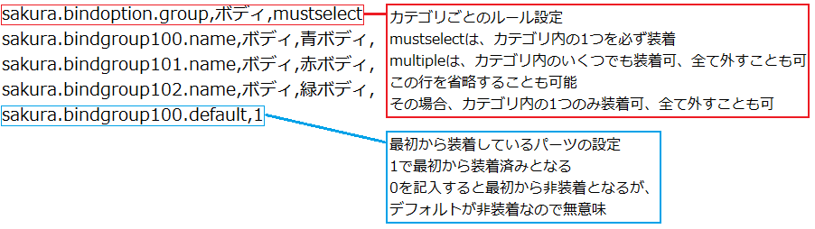
補足
デフォルトの「カテゴリ内の1つのみ装着可、全て外すことも可」は、行自体を省略可能です。
しかし、メンテナンスしやすくするため、例えば以下のように記述しておくと良いです。
sakura.bindoption.group,帽子
このように記述しておくと、「記述忘れでなく、意図があって設定している」ことが分かりやすくなり、維持が楽になります。
上記設定により、体の色を3色から自由に設定出来るようになります。
体を全て取り外すことはできないので、顔だけが浮遊している状況にはなりません。
ここでは、着せ替え設定をメニューから選択出来るようにする方法を記述します。
補足
descript.txtに「sakura.menu,auto」と書けば自動的にメニューを生成してくれるので、基本的にはこの段落の設定は不要です。
ただ、順番を入れ替えたり、特定の着せ替えだけ表示したくない場合などに、この設定は有用です。
以下の修正及び追加が段落「基本設定」のsurfaces.txtに行われているものとします。
----ここから----
surface0
{
element0,base,f顔.png,0,0
element1,overlay,f口.png,0,0
element2,overlay,f目.png,0,0
element3,overlay,f青ボディ.png,0,0 // この行を削除
}
surface1
{
element0,base,f顔.png,0,0
element1,overlay,f口.png,0,0
element2,overlay,f目閉じ1.png,0,0
element3,overlay,f青ボディ.png,0,0 // この行を削除
}
surface.append0-1
{
// アニメーション100番 着せ替え青ボディ
animation100.interval,bind
animation100.pattern0,overlay,1130,0,0,0
// アニメーション101番 着せ替え赤ボディ
animation101.interval,bind
animation101.pattern0,overlay,1131,0,0,0
// アニメーション102番 着せ替え緑ボディ
animation102.interval,bind
animation102.pattern0,overlay,1132,0,0,0
// アニメーション110番 着せ替え帽子
animation110.interval,bind
animation110.pattern0,overlay,1040,0,0,0
}
// アニメーション用サーフェス
surface1030
{
element0,base,f青ボディ.png,0,0
}
surface1031
{
element0,base,f赤ボディ.png,0,0
}
surface1032
{
element0,base,f緑ボディ.png,0,0
}
surface1040
{
element0,base,f帽子.png,0,0
}
----ここまで----
以下の追加が段落「基本設定」のdescript.txtに行われているものとします。
----ここから----
sakura.bindoption.group,帽子
sakura.bindgroup110.name,帽子,ハット,帽子サムネイル.png
sakura.bindoption.group,ボディ,mustselect
sakura.bindgroup100.name,ボディ,青ボディ,
sakura.bindgroup101.name,ボディ,赤ボディ,
sakura.bindgroup102.name,ボディ,緑ボディ,
sakura.bindgroup100.default,1
sakura.menu,auto // この行を削除
sakura.menuitem0,110
sakura.menuitem1,-
sakura.menuitem2,100
sakura.menuitem3,101
sakura.menuitem4,102
----ここまで----
着せ替えアニメーションを、どの順番でメニューに表示するかは、descript.txtに記述します。
上記は着せ替えと表示の順番が揃っていますが、好きな順に変更したり、記述しないことでユーザが触れないようにしたり出来ます。
sakura.menuitem????（????は数字）がメニューでの表示順を表しています。
右側の数字は、sakura.bindgroup〜に入力した番号です。
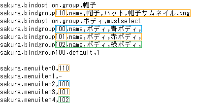
ここにハイフンを記述すると、ゴーストの着せ替えメニューに罫線を引くことが出来ます。
（上記ではsakura.menuitem1,-という表記）
descript.txtに以上が記述してあると、ゴースト側の表示は以下となります。
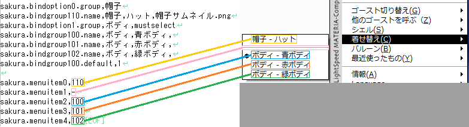
着せ替えのアニメーション
着せ替えパーツに、アニメーションをつけることも出来ます。
ここでは、サンプルとして、帽子が上下にふわふわし続けるというアニメーションを設定します。
段落「着せ替え基本」で記述した内容が、surfaces.txtとdescript.txtに設定済みであるとします。
上記の状態で、以下をsurfaces.txtに記述すると、帽子をかぶせた時にだけ、アニメーションが実行されるようになります。
----ここから----
surface.append0-1
{
// アニメーション110番 着せ替え帽子+アニメーション
animation110.interval,bind // この行を削除
animation110.pattern0,overlay,1040,0,0,0 // この行を削除
animation110.interval,bind+always
animation110.pattern0,overlay,1040,0,0,0
animation110.pattern1,overlay,1040,200,0,1
animation110.pattern2,overlay,1040,100,0,2
animation110.pattern3,overlay,1040,100,0,3
animation110.pattern4,overlay,1040,200,0,2
animation110.pattern5,overlay,1040,100,0,1
animation110.pattern6,overlay,1040,100,0,0
}
----ここまで----
bindには、「+」で繋げることで、アニメーションタイミングを指定できます。
alwaysは、実行され続けるアニメーションです。
アニメーションの再生が終わると、すぐにパターン0から再生が開始されます。
補足
「着せ替えが行われた時に1度だけ起こる」というのは、シェル側では設定できません。
（アニメーションタイミングrunonceではサーフェスが変化するごとにアニメーションが再生されてしまう）
実装自体は、ゴースト側の辞書で記述することで可能です。
- アニメーションタイミングがneverのアニメーションを作っておく（暫定的に100番とする）
- ゴーストの辞書にOnDressUpChangedイベントを記述
- 上記内部で引数を判別し、特定の着せ替えパーツが装着されたと判断したら\i[100]をトーク出力する
以下に里々で書いた場合のサンプルを記述します。
誰かがパーツ名「ハット」を装着したら、そのキャラクターに\i[100]を表示します。
----ここから----
＠OnDressupChanged
（when,（compare（バイト値,1）（R1）（バイト値,1）ハット） && （R2） == 1,\p[（R0）]\i[100]\e）
----ここまで----
サンプルダウンロード
ここでは、今回の記述に使った全要素を取り入れたシェルとsurfaces.txtとdescript.txtを公開します。
ポーズが違うサーフェスにも設定しているので、複数のポーズ差分がある場合は参考にしてください。
ポーズが1つだけの場合は、「横向きポーズ」以降は全て不要です。
今回作成したシェル
その他解説
スカートめくりや口パクなど、「画像を上に重ねる」アニメーションを紹介しましたが、それ以外の方法もいくつかあります。
ここでは、「画像自体の上書き」を行うアニメーションのサンプルを記述します。
尻尾や耳などがぴょこぴょこ動くアニメーションを作る際に使えます。
----ここから----
surface0
{
element0,base,surface0.png
}
surface.append0
{
// アニメーション10番 尻尾をパタパタする
// 毎秒、1/5の確率でアニメーションが発動する
// アニメーション中は、0.15秒（150ミリ秒）おきに画像が切り替わる
animation10.interval,ramdom,5
animation10.pattern0,replace,1050,0,0,0
animation10.pattern1,replace,1051,150,0,0
animation10.pattern2,replace,1050,150,0,0
animation10.pattern3,replace,-1,150,0,0
}
// アニメーション用サーフェス
// 以下はsurface0.pngと同じサイズの適切な画像が用意されているとする
surface1050
{
element0,base,尻尾アニメ0.png
}
surface1051
{
element0,base,尻尾アニメ1.png
}
----ここまで----
2014/04/06 作成
2014/04/27 着せ替えのメニュー表示を自動で行う方法を加筆
2014/12/18 ukadocリンク修正
2015/01/05 誤字修正
2015/01/10 html5の書式エラーを修正

この 作品 は クリエイティブ・コモンズ 表示 - 継承 2.1 日本 ライセンスの下に提供されています。
「伺か」に関する資料集として引用する場合に限り、このメモをパブリックドメインとして扱ってもかまいません。